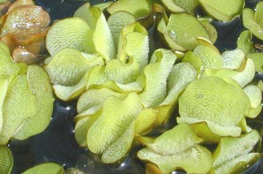
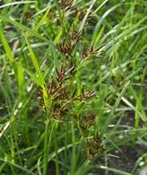

AGRO 304 :: Lecture 17 :: SHIFT OF WEED FLORA IN CROPPING SYSTEMS

Shifts in weeds are not new. Weed shifts have happened as long as humans have cultivated crops. Weedy and invasive species can easily adapt to changes in production practices in order to take advantage of the available niches. Weeds are well equipped to flourish in disturbed agricultural systems. Weeds are genetically diverse and can readily take advantage of the variety of conditions created by any crop production system. Therefore, one key to reducing the predominance of any given weed species isto increase the diversity of crops within the cropping system, or at least the diversity of weed management practices within the cropping system.
A change from conventional tillage to a conservation tillage system can lead to shifts in weed species composition. Weed shifts can also occur both within a population of a certain species (e.g., surviving mutants), or within a plant community (e.g., certain species). A weed species shift can result in the emergence of weeds tolerant of existing weed management practices. A need to recognise and understand shifts in weed populations in various cropping systems is important. An understanding of crop production effects on weed species shifts can lead to development of improved weed management strategies.
WEED SHIFT
A weed shift is the change in the composition or relative frequencies of weeds in a weed population (all individuals of a single species in a defined area) or community (all plant populations in a defined area) in response to natural or human-made environmental changes in an agricultural system.
Weed shifts occur when weed management practices do not control an entire weed community or population. The management practice could be herbicide use or any other practice such as tillage, manure application, or harvest schedule that brings about a change in weed species composition.
Some species or biotypes are killed by (or susceptible to) the weed management practice, others are not affected by the management practice (tolerant or resistant), and still others do not encounter the management practice (dormant at application). Those species that are not controlled can grow, reproduce, and increase in the community; resulting in a weed shift. Any cultural, physiological, biological, or chemical practice that modifies the growing environment without controlling all species equally can result in a weed shift.
In the case of chemical weed control, no single herbicide controls all weeds, as weeds differ in their susceptibility to an herbicide. Susceptible weeds are largely eliminated over time with continued use of the same herbicide. This allows inherently tolerant weed species to remain, which often thrive and proliferate with the reduced competition. As a result, there is a gradual shift to tolerant weed species when practices are continuously used that are not effective against those species. A weed shift does not necessarily have to be a shift to a different species. For example, with a foliar herbicide without residual activity like glyphosate, there could also be a shift within a weed species to a late emerging biotype that emerges after application.
WEED RESISTANCE
In contrast to weed shift, weed resistance is a change in the population of weeds that were previously susceptible to an herbicide, turning them into a population of the same species that is no longer controlled by that herbicide. While weed shifts occur with any agronomic practice (crop rotation, tillage, frequent harvest or use of particular herbicide), the evolution of weed resistance is only the result of continued herbicide appplication. The use of a single class herbicide application continuously over time creates selection pressure so that resistant individuals of a species survive and reproduce, while susceptible ones are killed.
A weed shift is far more common than weed resistance, and ordinarily take less time to develop. If an herbicide does not control all the weeds, the tendency is to quickly jump to the conclusion that resistance has occurred.
A common misconception is that weed resistance is instrinsically linked to genetically engineered crops. However, this is not correct. The occurrence of weed shifts and weed resistance is not unique to genetically engineered crops. Weed shifts and resistance are caused by the practices (for example repeated use of single herbicide) that may accompany a genetically engineered crop and not the GE crop itself. Similarly, tere is another belive that resistance is transferred from Ge crop to weed species. However, unless the crop is genetically very closely related to naturally occuring weed, weed resiatnce cannot be transferred from crop to weed.
Transgenic herbicide resistance crops have greater potential to foester weed shifts and resistant weeds since a grower is more likely to use single herbicide in transgenic herbicide resistance crops. The increase in acrege of these crops could increase the potential for weed shifts and weed resistance in the cropping systems utilising transgenic herbicide resistance crops.
WEED MANAGEMENT PRINCIPLES TO REDUCE WEED SHIFTS AND RESISTANCE
WEED IDENTIFICATION
Effective weed management practices begin with proper identification to assess the competiveness of the weeds present and to select the proper herbicide if one is needed. A weed management strategy to prevent weed shifts and weed resistancce requires knowledge of the composition of weeds present. Identification of young seedlings is particularly important because seedling weeds are easier to control.
FREQUENT MONITORING FOR ESCAPES
It is difficult to detect an emerging weed shift or weed resistance problem if fields are not frequently monitored for weeds that escapes current weed management practices. Identification and frequent monitoring can detect problem weeds early and guide management practices, including herbicide selection, ratre and timing.
HERBICIDE RATE AND TIMING
In weed management programme the grower must be sure to use the proper herbicide rate for the particular weeds species as they may sometimes tolerant to lower doses. And also the time of application of the herbicide dose is important i.e it treat the weeds when they are small, because after crossing certain stgage they may be tolerant to that particular herbicide or dosage.
CROP ROTATION
One of the most effective practices for preventing weed shifts and weed resistance is crop rotation, which allows growers to modify selection pressure imposed on weeds. Crops differ in their ability to compete with weeds; some weeds are a problem in some crops, while they are less problematic in others. Rotation therefore would not favor any particular weed spectrum. Crop rotation also allows the use of different weed control practices, such as cultivation and application of herbicides with different sites of action. As a result, no single weed spices or biotype should become dominant.
AGRONOMIC PRACTICES
In addition to crop rotation, several management practices may have an impact on the selection of problem weed populations. If problem weeds germinate at a specific time of year, crop seeding date can be shifted to avoid these weed populations. Delaying irrigation after can reduce germination of certain summer annual weeds. However, this practice only works on some soil types and water stress resistant cropsonly. Harvest management can, assist in eliminating or suppressing problem weed populations in some cases, but harvest must occur before weed seed production to prevent weed proliferation.
ROTATION OF HERBICIDES
Weed shifts occur because herbicides are not equally effective against all weed species and herbicides differ greatly in the weed spectrum they control. A weed species that is not controlled will survive and increase in density following repeated use of one herbicide. Therefore, rotating herbicides is recommended. Rotation of herbicides reduces weed shifts, provided the rotation herbicide reduces weed shifts, provided the rotational herbicide is highly effective against the weed species that is not controlled with the primary herbicide. The grower should rotate to an herbicide with a complimentary spectrum of weed control, along with a different mechanism of action and therefore a different herbicide binding site. Weed susceptibility charts are useful to help develop an effective herbicide binding site and herbicide rotation scheme. In addition, publications on herbicide chemical families are available to assist growers in choosing herbicides with different mechanisms of action.
Rotating herbicides is also an effective strategy for resistance management. Within a weed species there are different biotypes, each with its own genetic makeup, enabling some of them to survive a particular herbicide application. The susceptible weeds in a population are killed, while the resistant ones survives, set seed, and increase over time. Using an effective herbicide with a different mode of action from the one to which the weeds are resistant, however, controls both the susceptible and resistant biotypes. This prevents reproduction and slows the spread of the resistant biotype.
Frequency of Rotation depends on weed species and escapes. There is no definitive rule on how often herbicides should be rotated. It is better to rotate at least once on the middle years or more often for perrenial crop. It can also be modified depending upon actual observations of evolving weed problems. The key point, which cannot be overemphasized, is the importance of thorough monitoring for weed escapes. Producers should stay alert to the appearance of weed species shifts and evolution of resistant weeds. Weed resistance should be confirmed by controlled studies conducted by a weed scientist. However in these situations, it is imperative to prevent reproduction of a potentially resistant biotype. Treat weed escapes with alternative herbicides or other effective control measure.
AQUATIC AND PROBLAMATIC WEEDS AND THEIR MANAGEMENT
AQUATIC WEEDS
Almost all the water bodies have plants growing in them. Presence of plants in water bodies is essential for the conversion of solar energy into chemical energy for the development of aquatic fauna like fish, prawns etc. and for the continuous addition of oxygen to water during photosynthesis. If the water plants due to overgrowth make such water bodies unfit and take the shape of noxious aquatic vegetation, these may be referred as aquatic weeds. Aquatic weeds are the greatest problem in fishing, irrigation and efficient water supply. Because of scarce water supply and high population it has almost become imperative in every country to save water from the ravages of aquatic weeds. Since the beginning of this century, greater efforts are being made using the variety of implements, chemicals and bio-agents. Of the 800,000 ha of fresh water available in India for pisciculture, about 40% rendered unsuitable for fish production because of invasion by aquatic weeds. Some major aquatic weeds are;
WATER HYACINTH
Origin and Distribution
Water Hyacinth (Eichhornia crassipes) which is native to the Amazon basin, Brazil, became widespread throughout the world, also due to its attractive appearance. It is commercially available as an ornamental for ponds. At present it occurs as a weed throughout tropical and subtropical regions of the world, including North and South America, Africa, Asia, Australia and New Zealand. It is considered the worst aquatic weed in the world.
Morphology and Biology
This perennial herbaceous plant is a floating freshwater hydrophyte. It belongs to the Family Pontederiaceae. The flowers are bluish purple, large and self-fertile. The seeds are produced in large numbers and are contained in capsules, each capsule containing up to 300 seeds. The seeds can remain viable for 5-20 years. The plant can also
WATER LETTUCE
Origin and Distribution
The area of origin of Water Lettuce (Pistia stratiotes L.), is most probably South America. The plant spread widely and at present occurs in all continents, except Europe and Antarctica. Probably the initial spread took place through ballast water in ships from South America.
Morphology and Biology
This perennial freshwater hydrophyte is a herbaceous floating plant belonging to the Family Araceae. It consists of a rosette of pale green leaves, prominently veined and it resembles a small lettuce plant. Water Lettuce has velvety-hairy, erect leaf blades, a very short stem and long feathery roots suspended in water. The flowers are bisexual. The plant reproduces and spreads rapidly by means of stolons and seeds. The seeds are easily carried by water for long distances, since they float during the first two days after they reach maturity. Both Water Lettuce and Water Hyacinth can bioaccumulate heavy metals.
WATER FERN
Origin and Distribution
Water Fern (Salvinia molesta) is native of South America. The plant was introduced to Sri Lanka in the 1930s and has rapidly spread since then, now occurring in tropical and subtropical regions worldwide. The species is commercially available for aquariums and ponds and thus it was initially introduced and may still contribute to its spread.

Morphology and Biology
Water Fern is a free-floating fern belonging to the Family Salviniaceae that lives in freshwater systems. Stagnant or slowly moving waters are the habitats most favourable to its growth. It consists of a horizontal rhizome that floats just below the water surface and produces at each node three leaves. The plant does not have roots. The submerged leaf serves as roots by absorbing water and nutrients. Hairs on the aerial leaves allow the plant to float. Individual plants are up to 30 cm long. Their growth is extremely fast, allowing the population to double within about one week. Water Fern readily reproduces vegetatively, by fragmentation of the rhizome, small fragments allowing the development of new infestations.
Problems
All these weeds develop dense mats on the surface of the water and becoming a major weed problem. The main problems arising from the growth of these weeds are
- an enormous water loss through evapotranspiration, that alters the water balance of entire regions
- clogging rivers and canals and related problems
- the impediment to water flow, that increases sedimentation, causing flooding and soil erosion
- hampering fishing and dramatically reducing the catch and the source of food and income for local populations
- a drastic change in the physical and chemical properties of water and in the environment in the water bodies invaded, with detrimental effects on plants and animals;
- interfering with the activity of hydroelectric power stations
- a serious threaten to agricultural production, following the blockage of irrigation canals and drainage systems.
- hampering fishing
- hampering navigation
- indirectly affects human health, since it provides a suitable breeding habitat for pests and vectors of diseases.
Management
An integrated and to the extent possible an environment-friendly approach is to be employed for management of aquatic weeds. Aquatic weed-control measures can broadly be grouped into the following categories.
Preventive
The success of preventive weed-management programmes varies with the weed species, its means of dissemination and the amount of efforts applied. Preventive weed-management programmes usually require community action through the enactment and enforcement of appropriate laws and regulations.
Mechanical
This has both, advantages and limitations. Advantages include utilization of available man-power; is environment friendly, yields immediate results, is non-selective with fewer chances of permitting ecological shifts in aquatic flora; lessens mass nutrient load of eutrophic water bodies, helping indirectly in diminishing the future weed populations; reduces dependence on import of herbicides; harvested weeds may have various utilities as feed, manure, energy source etc; and most importantly can be exercised in any localized areas of water bodies. The limitations include limited effectiveness as in some cases the weeds re-grow from their rootstocks, rhizomes and the like spreading weeds new areas; labour-intensive and expensive and sometime removal of weeds may deplete water bodies of their nutrients limiting growth of planktons. The methods include, netting, erecting barriers, chaining, dredging, draining, use of water-weed cutters, submergence, shading, cleaning of irrigation waters etc.
Biological
Biological methods of management require the use of organisms that have been used for biological control, are diverse and include various types of animals and plants like insects, fishes, pathogens, nematodes etc. Biological management is more complex than chemical weed control because it requires (a) long-term planning, (b) multiple tactics, and (c) manipulation of cropping system and direct interaction with the environment.
Use of several species of herbivorous fishes which feed on submerged aquatic weeds include Tilapa sp., Ctenopharyngodon idella, and other species. Observations are also available for rodents, snails etc. The use of insects like Neochetina bruchi and N. eichhorniae for control of water-hyacinth, and Cyrtobagous salviniae for control of Salvinia molesta has been found effective in India.
Problamatic weeds
Weed control practices often have an effect on the weeds, on a year by year basis. Before the development of herbicides, growers relied heavily on tillage as a tool for controlling and suppressing weeds. Once herbicides became a valuable tool, some of the problem weeds found in predominantly tillage based management practices began to fade and new problematic weeds began to fill the gap. As our habits change, specific weeds will exploit the new niches we create and become the more dominant species.
Some of the weeds like Cyperus rotundus, Cynodon dactylon, Eleusine indica etc., are listed as world’s worst weeds. Cyperus rotundus is the most problamatic weed present in 92 countries, followed by Cynodon dactylon in 80 countries. Both weeds are perennial, mainly propagated by vegetative means and also by seeds. Cyperus rotundus is a problem weed in 52 crops while Eleusine indica in 46 crops. Some of the world’s worst weeds are listed below,
Weed Ranking |
Common Name |
Botanical Name |
Occurrence in no. of |
|
Crops |
Countries |
|||
1 |
Nut grass |
Cyperus rotundus |
52 |
92 |
2 |
Bermuda grass |
Cynodon dactylon |
40 |
80 |
3 |
Banyard grass |
Echinochloa colonum |
36 |
61 |
4 |
Jungle grass |
Echinochloa crusgalli |
35 |
60 |
5 |
Goose grass |
Eleusine indica |
46 |
60 |
6 |
Jhonson grass |
Sorghum halapense |
30 |
53 |
7 |
- |
Imperata cylindica |
35 |
73 |
8 |
Water hyacyinth |
Eichornia crassipes |
- |
- |
9 |
- |
Portulaca oleracea |
45 |
81 |
10 |
Fat hen |
Chenopodium album |
40 |
47 |
11 |
Large crab grass |
Digitaria saugunialis |
33 |
56 |
12 |
Field bund weed |
Convolvulus arvensis |
32 |
44 |
Pictures
Cyperus rotundus  |
Cynodon dactylon |
Echinochloa colonum |
|
Echinochloa crusgalli |
Eleusine indica |
Sorghum halapense |
|
Imperata cylindica |
Eichornia crassipes |
Portulaca oleracea |
|
Chenopodium album |
Digitaria sauguinalis |
Convolvulus arvensis |
|
PERENNIAL WEED MANAGEMENT
Prevention
The most basic and effective of all methods to control perennial weeds is prevention. As discussed earlier, there are several means of weed seed dispersal, most of which can be prevented. Ensuring clean crop seed, animal feed, and hay is the most important measure in preventing seed dispersal. Other methods of prevention include cleaning field machinery and harvest equipment when moving between fields, proper long-term manure storage to reduce seed viability after passing through animals' digestive tracts, and maintenance of weed-free irrigation water.
Crop rotation can be another effective method to prevent the establishment of perennial weeds. The most effective crop rotations for this purpose include not only crops that compete well with perennial weeds, but also those that allow the use of herbicides to control perennial seedlings.
MECHANICAL WEED CONTROL
Cultivation, when combined with other management tactics, can be used to control seedlings before energy-storing vegetative tissue has accumulated. Mechanical control no longer is effective after energy has been stored in underground vegetative tissue. In fact, cultivation of established perennials can spread weeds by cutting roots and moving them to new areas.
Perennial weeds are more common in reduced-tillage fields, where there is little soil disturbance to disrupt the development of below-ground storage organs. Once perennial weeds are established in reduced-tillage fields, cultivation is ineffective and might increase the spread of vegetative roots.
In pasture and forage crops, frequent mowing or cutting can prevent weed seed production and reduce the amount of energy stored in below-ground structures. Most important, maintenance of a vigorous crop stand through proper fertility and water management, seeding density, and variety selection will allow the competitive ability of the crop to suppress perennial weed growth. This simple "hands-off" approach requires little additional input or management, but can greatly reduce weed seed production and root growth.
CHEMICAL WEED CONTROL
Perennial weed control with herbicides must be repeated for 2 to 3 years and combined with other management tactics such as mowing. The key is to get the herbicide into the roots. Herbicide activity relies on foliar absorption and transport from the leaves to the root system. Young leaves move nutrients from the root in an upward, above-ground direction, while more mature leaves transport photosynthetic products to the root system for storage. Thus, the most effective herbicide activity occurs as the product is transported to the roots with the products of photosynthesis.
Herbicides are most effective on perennial weeds in the early fall, when weeds are transporting energy to the roots before winter dormancy. Treatment just before and during flower bud initiation also is effective, as the herbicide will be carried with photosynthetic products to the roots. To ensure the presence of sufficient mature foliage, apply postemergent herbicides either 1 to 2 weeks before cultivation or mowing, or after weed regrowth is at least 8 inches tall.
BIOLOGICAL WEED CONTROL
Biological control is a slow process, and results are not guaranteed. Therefore, it is used most appropriately as a component of an integrated weed management system that relies on multiple tactics for perennial weed control. For example, the fungus Concholiobolus lunatus kills barnyardgrass seedlings with fewer than two leaves, but growth of larger plants is only slowed and plants recover. However, when the fungus is combined with a sublethal dose of atrazine (a dose that injures but does not kill the barnyardgrass), larger barnyardgrass plants can be controlled better than when atrazine is used alone.
INTEGRATED WEED MANAGEMENT
Management of perennial weeds is most successful when multiple tactics are employed, such as the combination of chemical, mechanical, and cultural control. Integrated weed management, when combined with prevention and control of weeds outside of crop production areas, provides the best long-term management of perennial weeds.
| Download this lecture as PDF here |